Multiple security capabilities
CYFOX covered endpoint and security operations areas including EDR, event management, file integrity, network access, vulnerability visibility and asset protection.
ENTERPRISE UX CASE STUDY / CYBERSECURITY
A UX redesign of an enterprise cybersecurity platform spanning threat visibility, endpoint assets, forensic events, mitigations and administration.
The work focused on bringing multiple security capabilities into a more coherent operations experience. The supplied archive includes earlier module screens and a redesigned interface set, allowing the case study to examine how navigation, dashboard hierarchy, data tables and operational actions are structured.
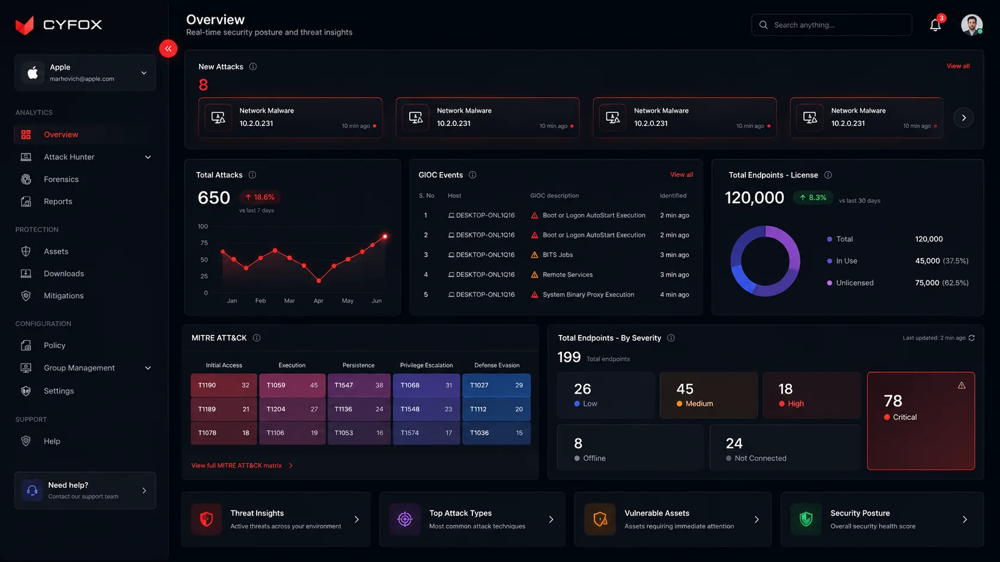
Scope note: The date shown is the broader Softobiz employment period associated with CYFOX in the supplied career context. The exact CYFOX project start/end dates, team composition and release status were not provided in the uploaded archive.
A hiring manager should understand the product challenge, your responsibility, your decisions and the visible deliverables before exploring the detailed UX process.
CYFOX covered endpoint and security operations areas including EDR, event management, file integrity, network access, vulnerability visibility and asset protection.
Organize security information and operational tasks so users can understand risk, review activity, inspect assets and access mitigation and administration tools.
Work across information hierarchy, navigation, overview dashboard, asset tables, forensic events, mitigation records, settings and user-management surfaces.
The supplied redesign includes a consolidated overview, structured sidebar navigation and dedicated screens for assets, forensics, mitigations, system settings and users.
Security operations interfaces bring together many kinds of information: endpoints, events, severity, investigation context, configuration and response actions. The design challenge is to help users move between those views without losing the operational thread.
The legacy archive shows separate surfaces for EDR, Event Manager, FIM, NAC, vulnerabilities, weak passwords, cloud and security wall-style monitoring. Each view represents a different part of the security picture.
The redesigned set makes threat overview, endpoint assets, forensic events and mitigations distinct destinations, while keeping them within one persistent product navigation model.
Legacy screens expose different security modules and data views. A user may need to move between these areas to build an operational picture.
Visible in legacy screensTables, event descriptions, endpoint records and configuration details require scanning, filtering and comparison.
Visible in legacy and new screensThe redesigned overview gives prominent space to attack activity, GIOC events, endpoint license and severity distribution.
Visible in redesigned overviewThe redesigned Assets screen places multi-select actions—Isolate, Release and Manage Subscriptions—near the selected asset set.
Visible in redesigned Assets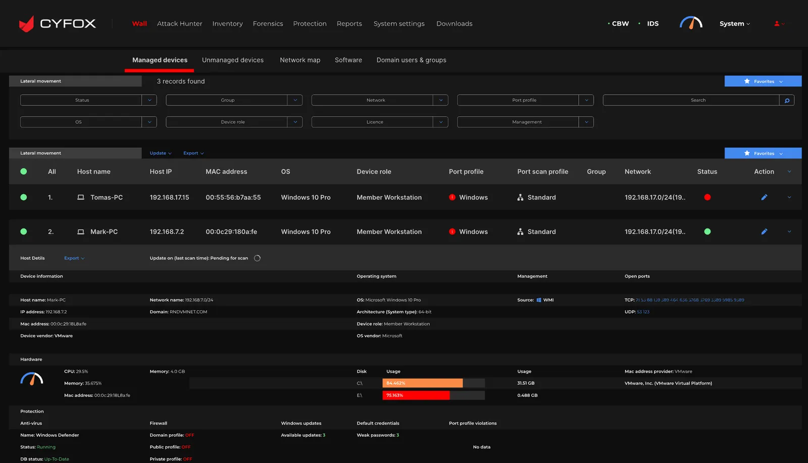
Interpretation: The screenshots support an interface redesign narrative. They do not, by themselves, prove that the older design caused specific user errors or measurable delays. Those would require research or operational data.
MoSCoW helps focus a complex platform redesign around the capabilities required for daily security operations, while separating supporting enhancements from longer-term ideas.
Without these, users cannot orient themselves, inspect endpoint context or follow security actions.
These capabilities support repeated operational and administrative tasks across the platform.
Potential enhancements to investigate after the core inventory, triage and mitigation workflows are dependable.
Proposed non-goals to protect the security-operations focus; not recorded as an approved stakeholder decision.
MoSCoW status: This prioritization is reconstructed from the uploaded screens and visible product capabilities. It is a portfolio explanation of how I would frame scope; it is not claimed to be the original approved backlog or workshop decision.
The available evidence supports a structured interface audit and task analysis. The archive does not contain raw user interviews, participant profiles or test results, so the research approach is presented honestly as an audit and a validation framework—not as completed user research.
Review the legacy EDR, Event Manager, FIM, NAC, Vulnerability, Weak Passwords, Cloud and monitoring screens to understand the information domains and repeated UI patterns.
Identify the major jobs visible in the redesigned product: monitor security posture, inspect assets, review forensic events, track mitigation state and administer users/settings.
Group the interface needs around orientation, risk visibility, data inspection, bulk action, configuration and support.
| Observed UI evidence | UX interpretation | Design opportunity | Confidence |
|---|---|---|---|
| Legacy archive includes multiple independent security module screens. | Security functions are represented through distinct module-specific views. | Provide a more consistent navigation shell and clearer grouping of product areas. | Visible in archive |
| New overview combines attacks, GIOC events, endpoint licensing, severity and MITRE ATT&CK. | Different security signals need to be understood together at a glance. | Use dashboard hierarchy to surface urgent signals and supporting context. | Visible in archive |
| Assets table includes risk score, management, OS, status and row actions. | Asset review needs comparable fields and clear operational state. | Use a consistent table structure, status labels, sort controls and contextual actions. | Visible in archive |
| Assets selected state exposes Isolate, Release and Manage Subscriptions. | Users may need to act on one or multiple selected endpoints. | Make selection count and available bulk actions explicit. | Visible in archive |
| Forensics and Mitigations have separate event-oriented tables. | Investigation evidence and response tracking are related but different tasks. | Keep the two destinations distinct while maintaining consistent table behaviors. | Visible in archive |
The screens suggest several task types. These are proto-personas based on the interface and common security-operation responsibilities—not validated user segments or research personas.
Primary job: understand threats and prioritize investigation.
“Show me what needs attention first, and let me get from an alert to the related evidence.”
Primary job: inspect endpoint state and coordinate response.
“Help me identify the right endpoint, understand its state and apply the appropriate action.”
Primary job: maintain system, user and group configuration.
“Let me manage access and settings without losing the structure of the security platform.”
Treat these as starting hypotheses. Validate role boundaries, permissions, language and task frequency with actual SOC analysts, endpoint operators and platform administrators.
This journey models a common security-operations task: monitor posture, detect an issue, investigate the event, inspect the affected endpoint, take a mitigation action and confirm the state. Validate the stages and sentiment with real operational users.
This is a task-based journey hypothesis derived from the interface. It is not a record of measured user emotions, task duration or observed pain-point frequency.
The redesigned navigation groups the platform into operational domains. This helps users build a mental model for where monitoring, protection, configuration and support tasks live.
IA evidence: The group labels and destinations are read from the redesigned sidebar. Users appears in the supplied Users screen; exact nesting or role-specific visibility should be confirmed against the live product.
The redesigned screens support three key task paths. The flows below show the intended sequence and the decision points that need to be clear to users.
Scan attacks, GIOC and severity.
Review new attack or event.
Inspect host, time, engine and description.
Understand risk and endpoint state.
Choose next operational action.
Key decision to validate: does the overview provide enough context to select the right event, and can the user reach the matching asset without losing their place?
View all or isolated agents.
Locate endpoint records.
Review selection count.
Use available bulk action.
Confirm resulting endpoint state.
Risk control to validate: selection scope, action confirmation, permission checks, success/error feedback and undo/reversal behavior where applicable.
Review current user records.
Start user administration.
Set relevant associations.
Review identity and group.
Confirm completion.
Validation needed: required fields, role/permission model, duplicate handling, import errors, confirmation and audit trail.
A principal-level walkthrough should connect the interface choices to the task they support and the risk they manage.
| Decision | User / product need | Design response | Trade-off / QA question |
|---|---|---|---|
| Persistent grouped sidebar | Users need predictable access across a broad platform. | Group destinations under Analytics, Protection, Configuration and Support. | Keep labels understandable; validate whether grouping matches users' mental model. |
| Consolidated overview | Users need a high-level view before opening individual modules. | Combine attacks, GIOC events, endpoint licensing, MITRE ATT&CK and severity distribution. | A dense dashboard can overwhelm; establish hierarchy and allow meaningful drill-down. |
| Severity is both color and label | Risk needs fast recognition without relying on color alone. | Use color alongside explicit labels such as Low, Medium, High and Critical. | Validate contrast, color-blind readability and consistent semantic use. |
| Data tables for operational records | Users need to scan, compare and find hosts/events. | Use clear columns, sorting, search, filters, pagination and row actions. | Balance information density with readability, responsive behavior and column priority. |
| Bulk actions beside selection | Users may need to isolate or release multiple agents. | Expose selected-row count and actions in a dedicated action bar. | High-impact actions require permission, confirmation, clear scope and feedback. |
| Dedicated Forensics and Mitigations views | Evidence review and response tracking are related but distinct. | Give each task a focused table while keeping shared navigation and table conventions. | Ensure users can move between related records without losing context. |
| Separate user and system administration | Operational platform setup needs a distinct information area. | Provide user records, add/import/export actions and grouped system settings. | Validate permissions, governance, empty states and error recovery. |
The redesigned screen set introduces a unified application shell and gives major tasks their own focused surfaces. These are the actual screens supplied in the archive.
The overview brings several security signals together: a new-attacks strip, total attack trend, GIOC event list, endpoint license distribution, MITRE ATT&CK matrix and endpoint severity distribution. The values visible in this screenshot are dashboard content—not evidence of design impact.
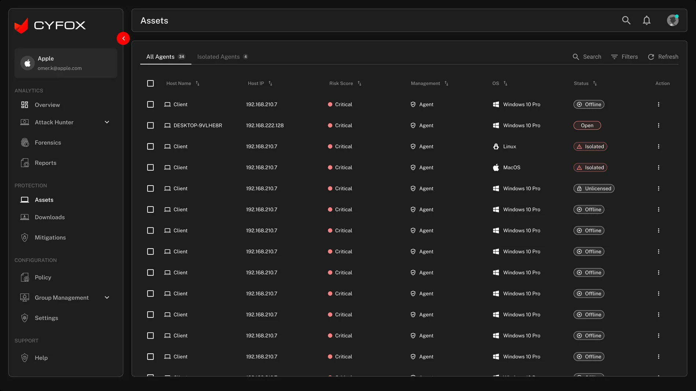
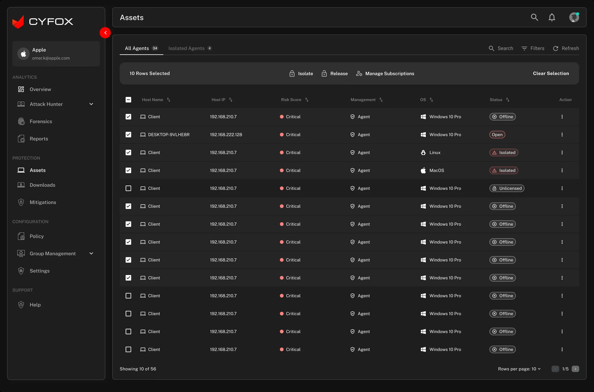
The asset table exposes comparable host attributes. The selected state makes the number of selected records visible and brings actions into a dedicated toolbar. This is especially important for actions that can affect endpoint connectivity.
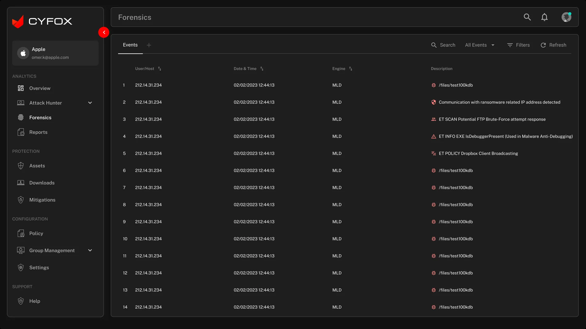
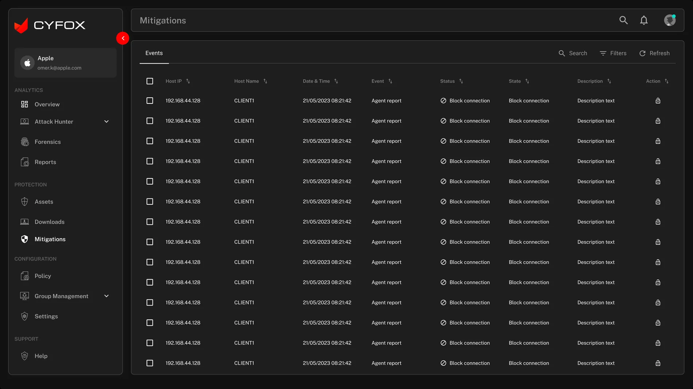
Forensics focuses on event context—host, time, engine and description. Mitigations focuses on response records and state. The information architecture keeps those tasks separate while the visual language remains consistent.
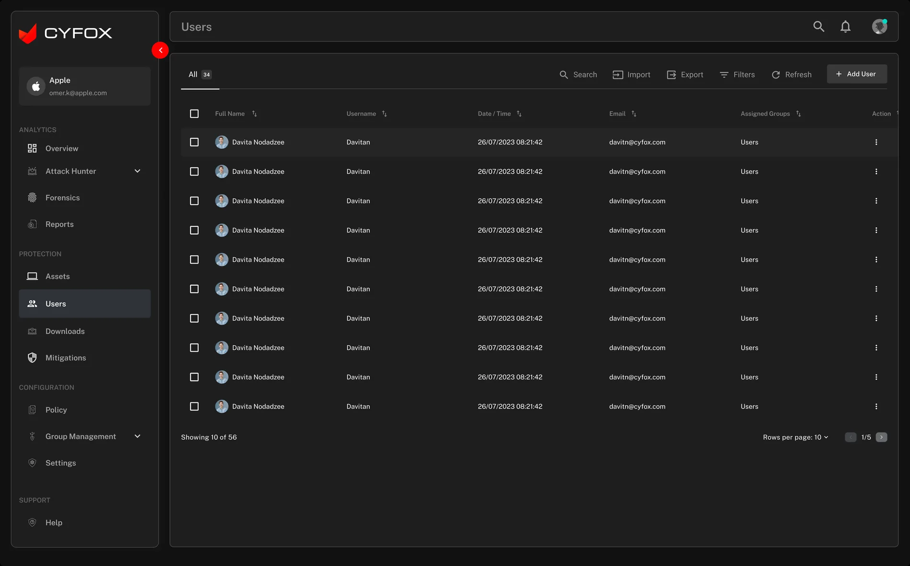
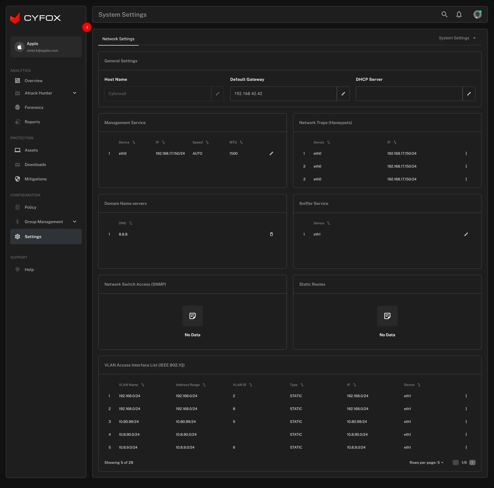
Administration is treated as a distinct task area, with user search, import/export, filters and add-user affordance. System settings use grouped configuration panels rather than mixing setup controls into the monitoring dashboard.
The legacy archive is valuable because it shows the breadth of the product before the redesigned screen set. It demonstrates the different security domains CYFOX needed to support.
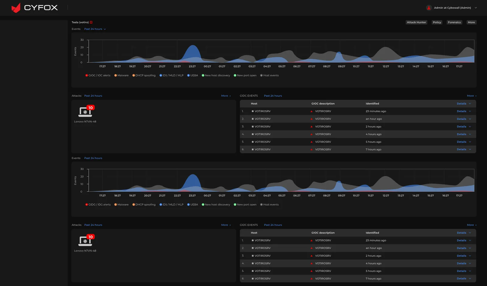
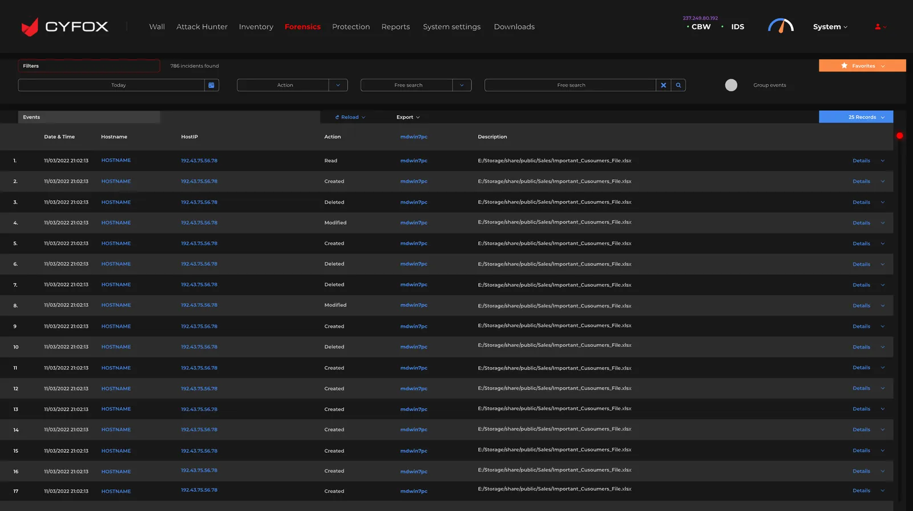
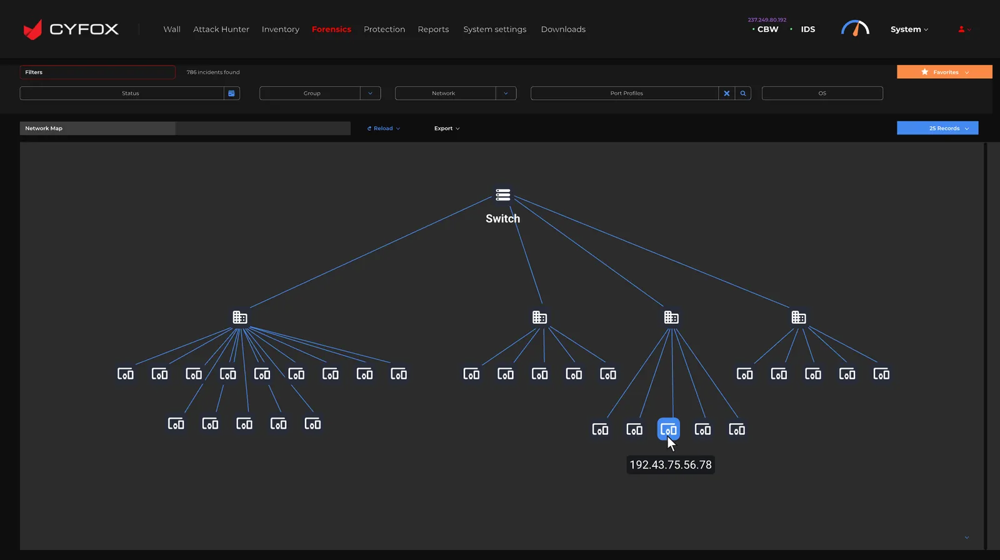
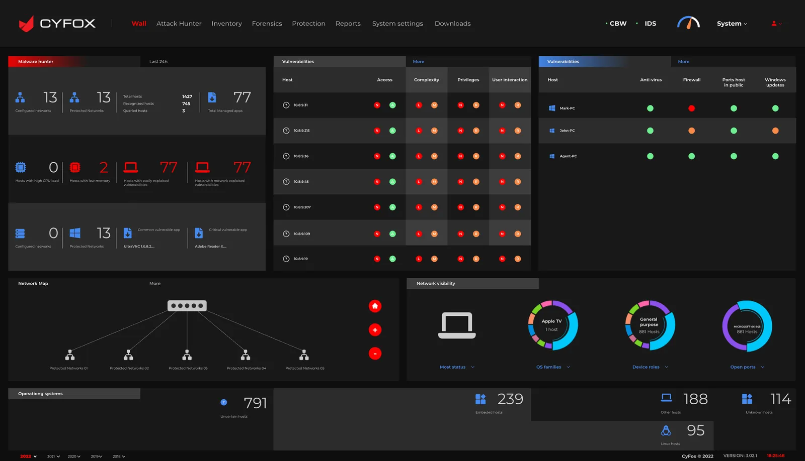
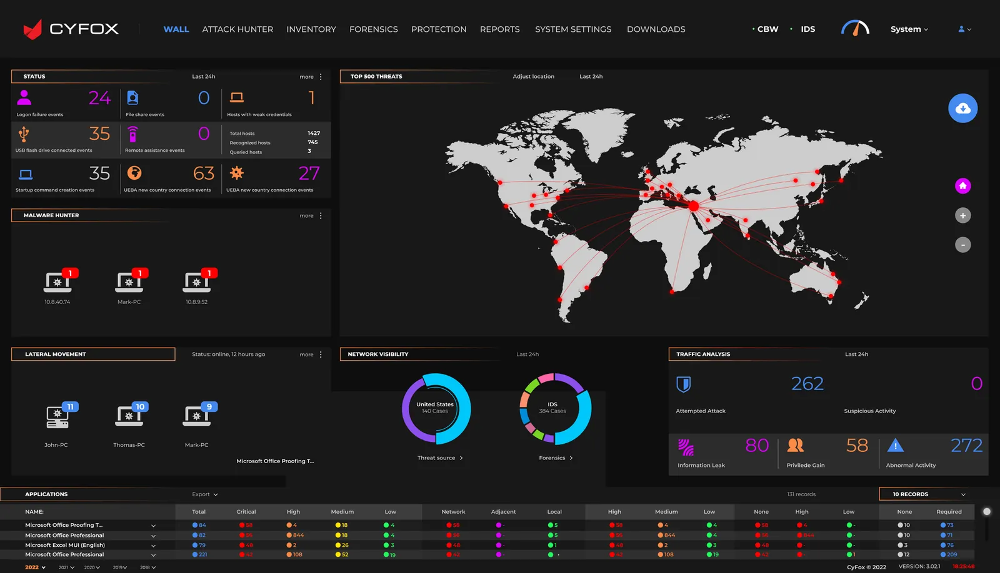
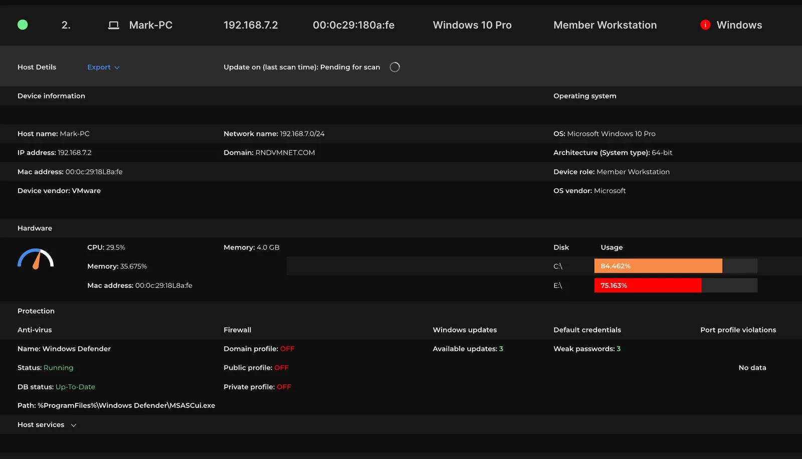
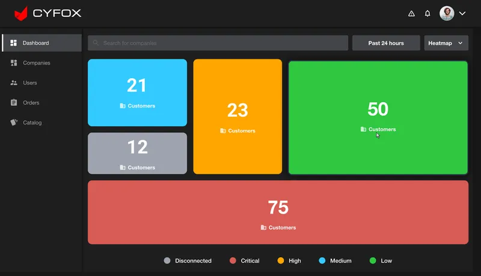
Comparison integrity: This gallery documents the legacy screens supplied in the archive. It does not claim that every legacy module was removed or that the redesigned pages are one-to-one replacements. The exact migration and module-retirement plan was not included.
The redesigned screens share a visual language across dashboards, tables and configuration forms. The design-system story should explain the reusable rules behind that consistency.
Observed visual direction: dark neutral surfaces, light text, red critical/threat emphasis and distinct amber, blue and green status colors. Exact token values should be confirmed from the source Figma file.
Dashboard headings, large metric values, table headers and supporting labels need distinct levels so users can scan from overview to detail.
Use repeatable spacing, card padding, table row height and alignment to balance information density with readability.
| Component family | Variants / states | Behavior contract | Evidence in screens |
|---|---|---|---|
| Application shell | Expanded / collapsed sidebar · active nav · global actions | Keep location, navigation and global utilities consistent. | All redesigned screens |
| KPI / metric card | Default · trend · loading · unavailable | Show metric, timeframe/context and trend without ambiguity. | Overview |
| Severity indicator | Low · Medium · High · Critical | Use color with text/icon labels; never rely on hue alone. | Overview / Assets |
| Data table | Default · sorted · selected · empty · loading | Support scanning, sort, pagination, row actions and stable columns. | Assets / Forensics / Mitigations / Users |
| Bulk action toolbar | Hidden · selected · processing · success · failure | Show selection scope and require confirmation for high-impact actions. | Assets selected |
| Filters and search | Closed · open · applied · cleared | Make applied filters visible and easy to reset. | Assets / Forensics / Mitigations |
| Configuration form | Default · edited · invalid · saved | Group related fields, show validation and confirm save state. | System Settings |
| User administration | List · add · import · export · empty | Make identity, group association and available actions clear. | User Management |
System ownership boundary: Screens show a consistent visual language and repeatable patterns. They do not prove a production Figma library, coded React component package, Storybook documentation, design-token export or versioning process. Add those artifacts only if you personally owned or contributed to them.
Security dashboards are high-density and status-heavy. Accessibility is not a finishing touch; it is part of helping users correctly interpret severity, locate information and take safe actions.
Pair severity colors with text labels and icons. Confirm contrast for body text, muted metadata, status chips, charts and focus indicators.
Ensure selection state is explicit, keyboard focus is visible, actions are announced clearly and risky operations have confirmation and feedback.
Use semantic table headers, readable labels, keyboard-accessible sort controls and predictable focus behavior across pagination and row actions.
Define column priority, horizontal table behavior, card stacking and access to global navigation. The uploaded archive does not show mobile layouts, so responsive behavior must be confirmed.
These are design and QA requirements. The supplied screens do not prove formal WCAG testing or responsive implementation. Do not claim conformance until the implemented product has been evaluated.
The redesigned interface should be evaluated using realistic security-operations tasks. The following is a validation plan, not a report of completed usability tests.
| Scenario | What to observe | Success signal | Priority |
|---|---|---|---|
| Identify highest-priority threat | Can an analyst interpret dashboard hierarchy, timeframe and severity? | Correctly identifies the most urgent item and explains why. | Critical |
| Investigate an event | Can the user find the relevant event by host, time, engine or description? | Locates the correct record without avoidable navigation loops. | Critical |
| Find an endpoint | Can the user use search, filters, sorting and status labels? | Identifies the intended endpoint confidently. | Critical |
| Isolate or release agents | Does the user understand selection scope, action consequences and status feedback? | Performs the intended action with no scope ambiguity. | Critical |
| Review mitigation state | Can the user distinguish event, status, state and next action? | Correctly interprets whether the response is complete or pending. | High |
| Manage a user | Can the administrator add/find a user and understand group association? | Completes the task and understands the resulting access state. | High |
The defensible result is a redesigned set of security-operations surfaces with a consistent navigation shell and focused destinations for monitoring, assets, investigation, mitigation and administration.
MY DESIGN CONTRIBUTION
Reviewed the breadth of legacy security modules and the tasks represented in the redesigned screen set.
Structured navigation around Analytics, Protection, Configuration and Support areas visible in the redesign.
Organized attack activity, GIOC events, endpoint licensing, MITRE ATT&CK and severity information into an overview surface.
Designed or contributed to focused asset, forensic, mitigation and user-management table views.
Made multi-select asset actions and system configuration surfaces explicit in the UI set.
Used a shared visual language across dashboard, data-table and administration screens.
In cybersecurity UX, clarity is operational safety. A user must understand the signal, identify the correct asset, understand the consequence of an action and verify the resulting state. The next design cycle should focus on testing those high-impact moments with SOC analysts and administrators, then formalizing the reusable components and interaction states that support them.